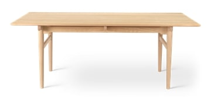
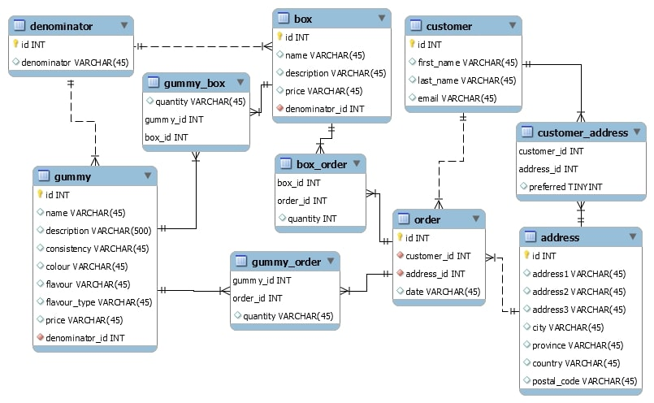

Data types and constraints
INFO6540
Philippe Mongeon
2022-02-08
Plan
What we’ve done so far
What we’re doing today
What we’ve done so far?
Representing things with data
A table

The same table, represented with data
| id | type | material | color | height | width | length | Designer |
|---|---|---|---|---|---|---|---|
| CH327 | Dining table | Oak | Soap | 72 | 95 | 190 | Hans J. Wegner |
Constraining our universe
What is the mission of our database?
What are the specific tasks that we want to accomplish?
What are the things that we need to represent with data to make that happen?
Designing tables
Three rules
One primary key per table
One row per entity
One column per variable
One value per cell
Three types of tables
Data tables (your main subjects)
Associative tables (connecting two data tables with a many-to-many relationship)
Look-up tables (list of possible values for a field)
Relationships between tables
1-to-1
1-to-many
many-to-many
Entity-relationship diagram

Data types and constraints
Characters
CHAR(length): all strings of the same length. Ex. char(7) for postal codes.
VARCHAR (max length): preferred for strings in multiple languages (use as default)
NCHAR() and NVARCHAR(): preferred for strings in multiple languages
Numbers
| Type | Storage (Bytes) | Minimum Value Signed | Minimum Value Unsigned | Maximum Value Signed | Maximum Value Unsigned |
|---|---|---|---|---|---|
| TINYINT | 1 | -127 | 0 | 127 | 255 |
| SMALLINT | 2 | -32768 | 0 | 32767 | 65535 |
| MEDIUMINT | 3 | -8388608 | 0 | 8388607 | 16777215 |
| INT | 4 | -2147483648 | 0 | 2147483647 | 4294967295 |
| BIGINT | 8 | -263 | 0 | 263-1 | 264-1 |
For decimals, use float or decimal(number of digits, number of decimals).
Dates
| Data Type | Format | Range |
|---|---|---|
| DATE | “0000-00-00” | “1000-01-01” to “9999-12-31” |
| TIME | “00:00:00” | “-838:59:59” to “838:59:59” |
| DATETIME | “0000-00-00 00:00:00” | “1000-01-01 00:00:00.000000” to “9999-12-31 23:59:59.999999” |
| TIMESTAMP | “0000-00-00 00:00:00” | “1970-01-01 00:00:01.000000” to “2038-01-19 03:14:07.999999” |
| YEAR | 0000 | 1901 to 2155 |
Constraints
Constraints are options that allow you to:
Constrain what values can go into a field (unique, not null, foreign key, check)
Assign values automatically (default, auto increment, generated, zero fill)
No Index

With index

Next steps
Go through your tables and change the data types of your fields to something that makes sense.
Optional: think about contraints that you could apply to your fields.